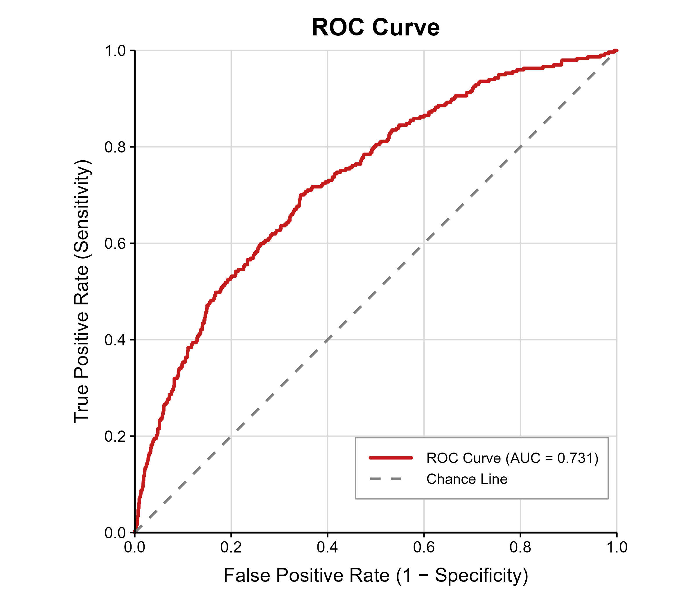
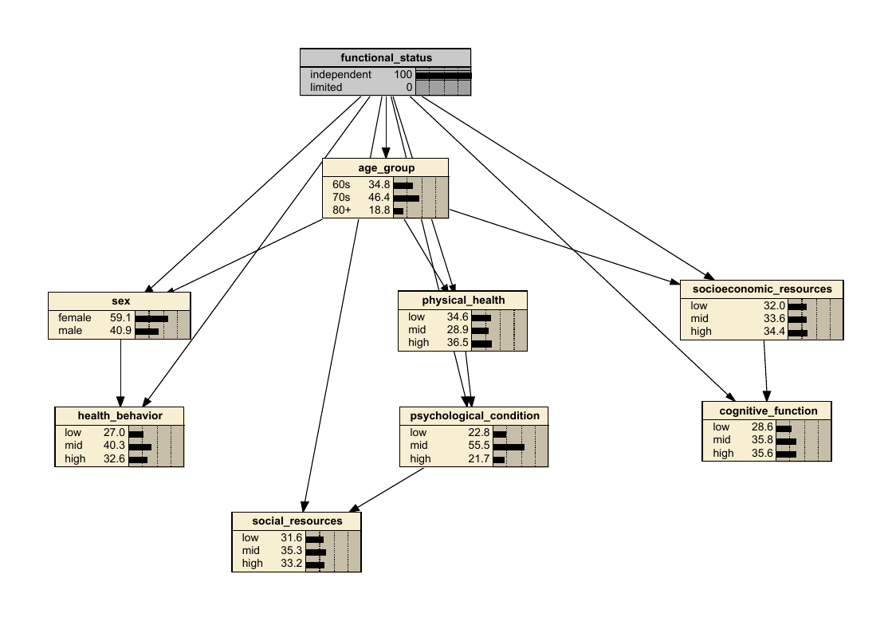

기능제한 사후확률18.9%
기능독립
81.1%
IMPS 2026 · KLoSA 2024
연령대·성별·여섯 기능 영역의 상태를 선택하고, 해당 집단의 기능제한 확률을 확인할 수 있습니다.
3.4 · INTERACTIVE POSTERIOR INFERENCE
노드의 상태를 한 번 클릭하면 100% 근거로 고정되고, 같은 상태를 다시 클릭하면 해제됩니다. 기능상태와 나머지 모든 노드의 분포는 함께 갱신됩니다.
3 · RESULTS
10-fold 교차검증 성능과 노드 상태별 예측확률·관찰률을 제시합니다.

파란색은 각 대상자의 표본 밖(out-of-fold) 예측확률 평균이고, 붉은색은 같은 상태 집단에서 실제로 기능제한이 관찰된 비율입니다.
3.2–3.3 · POSTERIOR INFERENCE
전체 표본으로 추정한 최종 TAN의 사후확률 결과입니다. 아래 Netica 이미지는 기능상태를 근거로 고정한 역방향 추론 참고 화면입니다.
근거를 추가했을 때의 기능제한 사후확률
결과 상태를 근거로 넣고 각 예측 노드의 조건부 분포를 비교합니다.

2 · METHODOLOGY
분석에 사용한 핵심 수식과 본 연구의 적용 과정을 함께 제시합니다.
Convex GSCA는 관측지표의 가중합으로 영역별 component를 구성하며, 가중치는 0 이상이고 합은 1이 되도록 추정합니다.
방향을 통일한 21개 지표를 z점수로 표준화한 뒤 여섯 영역별 convex component 점수를 추정했습니다. 이 연속 점수를 각 훈련 fold의 삼분위수로 낮음·중간·높음 상태로 구분했습니다.
Results = gsca.fit(Z, Model, Est)
Domain_scores = Results.INI(1).CVscoreTAN은 기능상태를 모든 예측노드의 부모로 두고, 예측노드 사이에는 최대 하나의 추가 부모를 허용하여 조건부 의존성을 표현합니다.
여섯 영역과 연령대·성별을 예측노드로 사용했습니다. 삼분위 절단점은 훈련 fold에서만 정하고 10-fold 교차검증으로 성능을 평가한 뒤, 전체 표본으로 최종 TAN을 추정해 확률추론에 사용했습니다.
structure <- tree.bayes(train, training=target,
explanatory=predictor_vars)
fitted <- bn.fit(structure, train,
method="bayes", iss=10)1 · INTRODUCTION
ADL과 IADL에서의 기능상태는 노인의 삶의 질과 독립생활을 반영하며 신체·인지·심리·사회·행동·경제적 요인과 함께 변합니다. 전통적인 회귀모형만으로는 여러 영역의 확률적 의존성과 부분적으로 관찰된 정보에 따른 확률 갱신을 한 화면에서 표현하기 어렵습니다. 이에 본 연구는 KLoSA 2024년 제10차 자료의 만 65세 이상 1,590명을 대상으로, 기능제한 위험을 예측하고 취약성 프로파일을 해석할 수 있는 TAN 베이지안 네트워크를 구축했습니다.
4 · CONCLUSION
TAN 분류모형은 AUC 0.731의 수용 가능한 선별 성능을 보였습니다. 기능제한 확률은 근거가 없을 때 18.9%였고, 신체건강과 인지기능이 모두 낮으면 42.2%, 여섯 영역이 모두 낮으면 60.3%로 증가했습니다. 반대로 여섯 영역이 모두 높으면 3.8%였습니다. 순방향 예측과 역방향 진단추론은 위험 선별과 기능 취약성 프로파일 해석에 함께 활용할 수 있습니다.
5 · REFERENCES